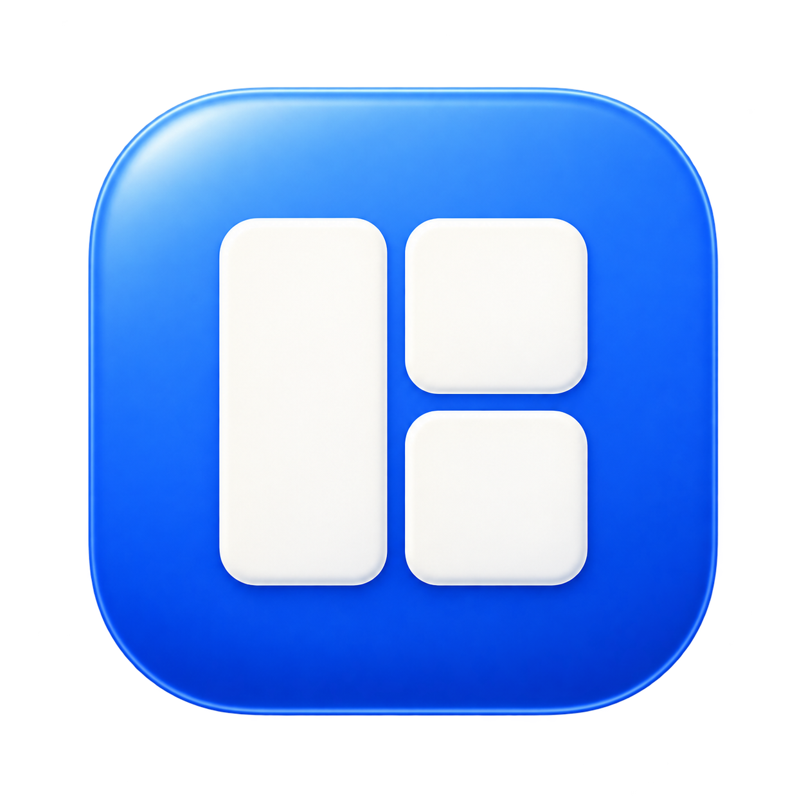

App icon · Zones
Zones é o ícone escolhido para a app, em azul da marca. O trabalho de novos logos fica adiado. Comparar tamanhos e família · Padrão do app icon
Features
Arte maior para comparar a família. As amostras abaixo de cada ícone estão a 72 e 20 px. Usa zoom a 100% para avaliar a leitura.
Sidebar e header
Preview de composição com os PNGs exportados. A app usa o componente partilhado ToolIcon. Este preview não executa os tools.
Estudos de acabamento

Enamel · escolhido
Processo e paletas em README.md. Prompts e mestres preservados para a próxima iteração.